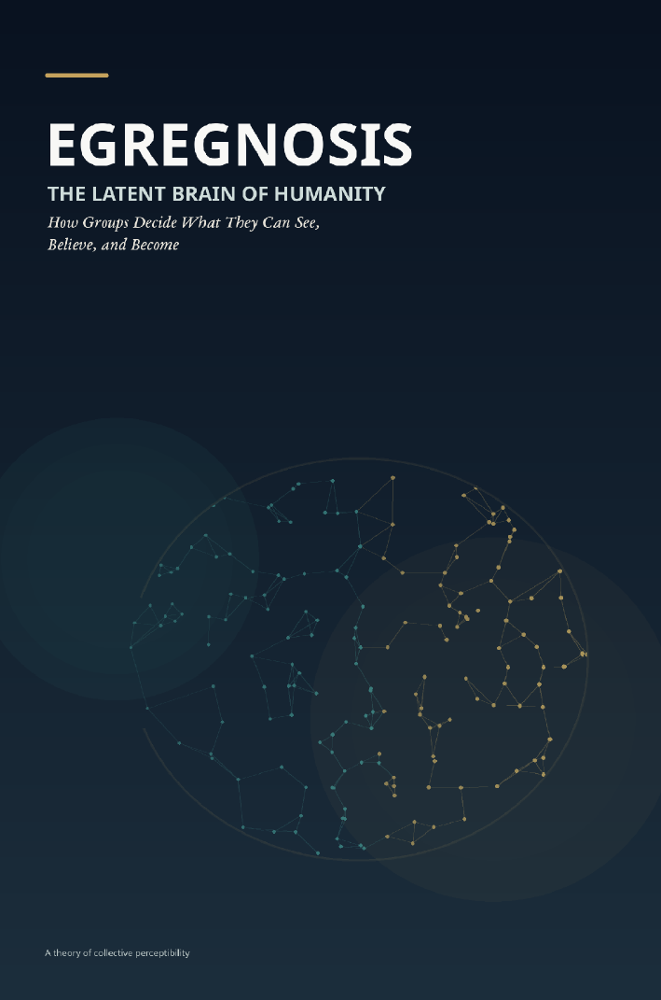

Power, Institutions & Society · Axiologic Research Editions
Egregnosis
The Latent Brain of Humanity: How Collective Minds Form, Think, and Break
Consider a society as a fallible perceptual system and explore what it takes for collective minds to notice the realities their own structures filter out.
A model, not a hidden superorganism
The book treats collective cognition as a research framework. Institutions, platforms, rituals, disciplines, markets, and public language distribute attention and decide what can become legible. Their combined effects can resemble perception, memory, inference, and denial without requiring a mystical collective mind.
This is a way to study what a society cannot see even when many of its members privately know it: the structural gaps between local observation, public speech, legitimacy, and action.
Prestige, news, and shared reality
Prestige can make an idea recognizable before its evidence is inspected. Media systems make some events socially real while leaving others peripheral. Identities supply priors that help people navigate complexity but can also prevent inconvenient evidence from crossing the threshold into common knowledge.
A collective blind spot is not empty information. It is information unable to change the shared model.
Institutions that can be surprised
The practical question is how public systems might become more corrigible: preserve dissent, separate status from evidence, create channels for anomalies, remember failed warnings, and give affected people a route into the models that govern them. The framework remains open to revision by research rather than asking to be accepted as a finished theory.